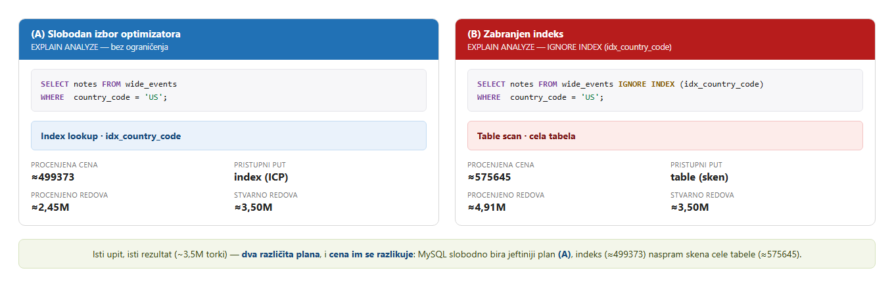

Ono što treba da ti bude jasno pre pisanja uvoda — čisto konceptualno, još bez MySQL mehanike (to počinje u Poglavlju 2).
Veza sa ciljem
Ova lekcija postoji da bi mogao da napišeš i odbraniš Uvod: da svojim rečima kažeš
šta je obrada upita, zašto je bitan jaz između deklarativnog SQL upita i njegovog fizičkog
izvršavanja, i zašto jedan SQL upit može da se izvrši kao više planova veoma različite cene. Ako sve
troje umeš da izgovoriš bez podsetnika, poglavlje se piše samo. Sve što sledi zasnovano je na
slajdovima prof. Stoimenova 03_Optimizacija str. 2–3 i
02_Evaluacija str. 2–4.
1 · Obrada upita jeste taj jaz
SQL je deklarativan: pišeš šta želiš da dobiješ, nikad
kako da se do toga dođe. Ali mašina ume da izvrši samo procedure,
a procedure su fizičke — čitanje i upisivanje stranica na disku, prolazak kroz
B+ stablo, sken heap fajla. Obrada upita je sve što DBMS radi da bi premostio
taj jaz.
deklarativni SQL — šta↓ obrada upita ↓fizičke operacije · disk · indeks · torke — kako
Korisnik je namerno oslobođen „kako“. Cena te jednostavnosti je da DBMS mora da ga
rekonstruiše svaki put.
03_Optimizacija · str. 2SQL upitni jezik — orijentisan ka korisnicima, jednostavan. […] teret efikasnih odgovaranja na
upite nosi DBMS.SQL je orijentisan ka korisniku i jednostavan; teret efikasnog
odgovaranja na upite nosi DBMS — ne korisnik.
02_Evaluacija · str. 2Prostor na disku: jedinica je stranica, obično 4 KB ili 8 KB … I/O operacije — čitanje/upis
stranice.„Kako“ strana jaza je konkretna: stranice od 4–8 KB, čitanja i upisi
stranica, heap / sortirani / heš fajlovi, indeksi, B+ stabla.
2 · Jedan problem, dva nivoa
DBMS premošćuje jaz tako što optimizuje na dva nivoa — strukturna ideja celog rada.
Isti problem, dva nivoa: prvo bira oblik izračunavanja, a zatim
mašineriju koja taj oblik izvršava.
03_Optimizacija · str. 2Moderni DBMS vrši optimizaciju na dva nivoa.
Viši · logički nivo
Preformuliše izraz relacione algebre u ekvivalentan koji
se brže izvršava.
Menja oblik (spušta selekcije naniže, menja redosled spojeva) — nikad
rezultat.
I dalje apstraktno: ne govori kako se pojedinačna operacija
izvršava.
Niži · fizički nivo
Bira konkretan algoritam i pristupni put po operatoru.
Nema univerzalno superiorne tehnike — najbolji izbor zavisi od podataka
(02_Evaluacija str. 4).
Trostepeni recept prof. Stoimenova na 03_Optimizacija str. 3 ih spaja:
(1) napiši upit u relacionoj algebri (logički),
(2) izaberi algoritme najmanje cene za međurezultate
(fizički), (3) izvrši ih i proizvedi
rezultat. Reč koja upravlja obama nivoima je ista: cena. Taj zajednički cilj je ono
što ih čini dvama nivoima jednog problema, a ne dvama problemima.
3 · Zašto je sve ovo bitno
Pomnoži logičke izbore (ekvivalentni algebarski oblici) sa fizičkim izborima (algoritam po
operatoru) i jedan SQL upit se grana u više planova izvršenja koji vraćaju identičan
rezultat, ali koštaju drastično različito — selektivan indeks dodirne šačicu stranica, a
sken dodirne milione. Isti odgovor, razlika u poslu za nekoliko redova veličine.
03_Optimizacija · str. 2SQL upit se može izvršiti na različite načine, a zadatak DBMSa je da odabere najefikasniji način.SQL upit može da se izvrši na različite načine; posao DBMSa je da izabere
najefikasniji. Taj izbor je tema celog rada.
4 · Vidi na svom primeru — jedan upit, dva plana
Gornja tvrdnja nije apstraktna — možeš da je vidiš uživo. Pokreni ovo sada, dok ti je ideja sveža.
Poenta nije da detaljno čitaš plan (to je Poglavlje 4) — samo da vidiš
da jedan nepromenjen upit ima više ispravnih planova, i da ti planovi koštaju
različito.
Probaj u Workbench-u
Preduslov: sintetička tabela obrada_upita.wide_events
(5 miliona torki) iz examples/00-setup/. Ako je još nisi napravio, koncept
stoji i bez pokretanja — samo pročitaj delove „šta treba da vidiš“ i „kako da ga pročitaš“.
Pokreni ovo
USE obrada_upita;
-- Jedan upit, dva plana. Oba vraćaju istih ~3,5M torki (~70% tabele).-- (A) Pusti MySQL da bira slobodno:EXPLAINFORMAT=TREESELECT notes FROM wide_events
WHERE country_code = 'US';
-- (B) Zabrani mu indeks — da otkriješ plan koji je odbacio:EXPLAINFORMAT=TREESELECT notes FROM wide_events IGNORE INDEX (idx_country_code)
WHERE country_code = 'US';
IGNORE INDEX je samo poluga da se otkrije alternativni plan — onaj koji MySQL
nije izabrao. 'US' je najčešća vrednost (~70% tabele).
Šta treba da vidiš
(A) slobodan izbor
Pretraga preko indeksa
(Index lookup … using idx_country_code) — na ovim podacima
cost≈513107. MySQL bira indeks.
(B) zabranjen indeks
Sken cele tabele
(Table scan on wide_events) — cost≈580134, dakle
skuplji. Zato ga MySQL nije izabrao.
Tačni brojevi zavise od statistike tvoje tabele, pa ne juri cifre — bitno je da
su to dva različita plana za isti upit i da im se cena razlikuje.
(Ako ti se ne pojave dva različita plana, javi mi — to je zanimljivo, pa ćemo pogledati zašto.)

Isti upit iz Workbench-a iznad, oba plana jedno pored drugog — slobodan izbor
(A) protiv zabranjenog indeksa (B). Cena i procenjeni/stvarni broj redova iz
EXPLAIN ANALYZE FORMAT=JSON, uživo sa ovog servera.
Kako da ga pročitaš
Ovo je fizički nivo (niži nivo) iz §2, uživo: MySQL je
izračunao cenu dva pristupna puta za identičan upit i zadržao jeftiniji —
indeks (513107) umesto skena tabele (580134). Plan (B) je onaj
koji je odbacio: iste torke, više posla. Isti upit → dva plana → različita cena.
To je upravo rečenica iz §3, i razlog zašto svako poglavlje posle ovog postoji.
Ograničenje. Ovde ne učiš da čitaš EXPLAIN —
kolone stabla, formulu cene i to zašto se procenjeni broj torki
(2.45e+6) razlikuje od stvarnog (3.5e+6, koliko pokaže
EXPLAIN ANALYZE), sve su to teme Poglavlja 4. Za Uvod je
dovoljan jedan zaključak: jedan SQL upit, više planova, nejednaka cena.
5 · Priseti se (nemoj samo ponovo čitati)
Pokrij odgovore. Izgovori svaki naglas na srpskom pre nego što ga otvoriš — vežbaš
tačan pojmovnik iz rečnika kojim ćeš pisati rad, pa je prisećanje na
ciljnom jeziku i cela poenta.
U jednoj rečenici: šta je obrada upita?
Sve što DBMS radi da bi premostio jaz između deklarativnog SQL upita (šta se traži)
i fizičkih operacija nad diskom, indeksom i torkama (kako se rezultat dobija).
Šta logički nivo menja, a šta nikada ne menja?
Menja oblik izraza relacione algebre u ekvivalentan, brži oblik;
nikada ne menja sam rezultat.
Šta fizički nivo odlučuje?
Konkretan algoritam i pristupni put za svaki operator — na primer sken tabele ili
sken preko indeksa, i koji algoritam spoja — jer ne postoji univerzalno najbolja tehnika.
Zašto uopšte mora da postoji ostatak rada?
Jer se jedan SQL upit preslikava na više ekvivalentnih planova izvršenja veoma
različite cene, pa optimizator upita mora da pretražuje i bira — a kako MySQL
donosi i izvršava taj izbor jeste tema rada.
6 · Zatvori Uvod mapom puta
Završi uvod tako što čitaocu kažeš kuda rad ide — po jedna rečenica za svako:
Arhitektura obrade upita u MySQL-u — komponente koje premošćuju jaz (parser,
optimizator, evaluator, katalog) i kako ih MySQL raspoređuje.
Od SQL-a do plana izvršavanja — dva nivoa, opipljivo: SQL → preformulacija relacione
algebre → fizički plan, na stvarnom upitu.
EXPLAIN i EXPLAIN ANALYZE — alati da se vidi izabrani plan i uporedi
njegova procenjena cena sa onim što se stvarno desilo.
Iterator model i pipeline operatora — kako se izabrani plan izvršava: operatori povlače
torke jedan od drugog, torku po torku.
Vektorizovano izvršavanje — grupna/kolonska alternativa izvršavanju torku-po-torku, i
gde MySQL tu stoji.
Paralelno izvršavanje upita — korišćenje više jezgara na jednom upitu, i stvarne granice
MySQL-ove paralelnosti.
Keširanje i ponovna upotreba planova — može li se izabrani plan ponovo upotrebiti umesto
da se računa iznova, i šta MySQL zaista kešira.
Zaključak — nit provučena do kraja, od deklarativnog SQL-a nazad do fizičkog
izvršavanja.
Pitaj svog predavača
Ova lekcija je polazna tačka, ne celo predavanje. Ako ti je podela na logički/fizički nivo i dalje
mutna, ili želiš da ideju „više ekvivalentnih planova“ vidiš na nekom svom Sakila / wide_events
upitu pre nego što je napišeš, pitaj u četu — zato sam tu.